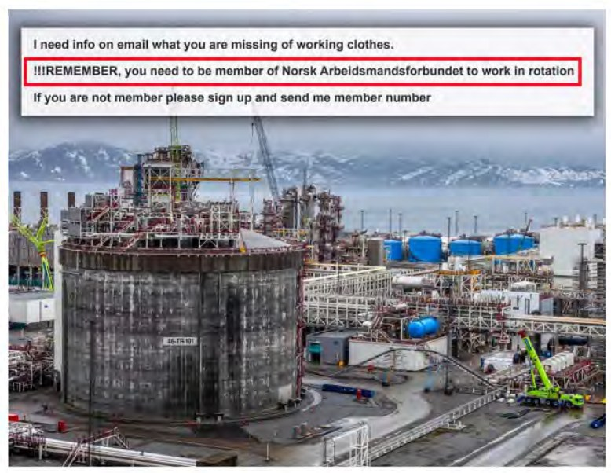

Tre utropstegn avgjorde innleiesaken
Fire dager etter ankeforhandlingen har Borgarting lagmannsrett avsagt dom. Lunsjbordet gjengir den i sin helhet. Den kan leses på under seks minutter.

Borgarting lagmannsrett
Dom
Saken gjelder
Saken gjelder om innstrammingene i reglene om innleie fra bemanningsforetak i 2023 strider mot EØS-retten, og om staten er erstatningsansvarlig. Etter tre dagers ankeforhandling er lagmannsretten kommet til at den gjelder Grunnloven § 101 og EMK artikkel 11. Sakens bakgrunn fremgår av utdraget, som er på over 4 400 sider.
Lagmannsrettens vurdering
- Tingretten fant ikke grunn til å drøfte Grunnloven § 101 eller EMK artikkel 11. Lagmannsretten drøfter lite annet. Saken kan avgjøres på grunnlag av utdraget side 4469 flg., som er en artikkel i VG 18. november 2025. Retten går derfor ikke inn på EØS-avtalen artikkel 36, vikarbyrådirektivet artikkel 4, EFTA-domstolens uttalelse i E-2/24 eller vitneforklaringene, som var godt forberedt.
- Etter Grunnloven § 101 første ledd har enhver rett til å danne, melde seg inn i og melde seg ut av foreninger. Bestemmelsen sier ingenting om å bli meldt inn. EMK artikkel 11 verner etter Sørensen og Rasmussen mot Danmark (2006) også retten til å la være.
- Utdraget beskriver en ordning der turnus krever fagforeningens ja, fagforeningens ja i praksis krever medlemmer, og arbeiderne i minst ett tilfelle meldes inn på liste rundt fire ganger i året. Lagmannsretten oppfatter dette som et sirkelresonnement med kontingent.
- Retten har lagt særlig vekt på en e-post der påminnelsen om medlemskap innledes med tre utropstegn. Ett utropstegn kan være en oppfordring. Tre er et pålegg.
- Et nyhetsvarsel om problemer hos en IT-gigant går igjen femten ganger i utskriften, og er hver gang seks minutter gammelt. Lagmannsretten legger til grunn at artikkelen ble skrevet ut i løpet av ett minutt. Den ble ikke gjennomgått like raskt.
- I utdraget anføres det at en organisasjonsgrad på 99 prosent viser frivillighet, siden den ikke er 100. Lagmannsretten har lest 99 prosent av utdraget. Det var ikke frivillig.
- Etter dette finner lagmannsretten det klart sannsynliggjort at det, for å låne en formulering fra utdraget, «kan høres ut som en tvangsinnmelding». Grunnloven § 101 og EMK artikkel 11 er avgjørende, og anken fører frem.
- Uten at det har betydning for resultatet, bemerker lagmannsretten at Polen har vært EØS-land siden 2004, og at landet etter 22 år ikke lenger kan kalles nytt. Retten er kjent med at de ankende partenes rettslige medhjelper ser annerledes på det.
- Lagmannsretten har forstått at saken uansett skal til Høyesterett, og har fattet seg i korthet.
Dommen er enstemmig. Dommerne er gjort kjent med at de kan dissentere ved å ta kontakt.
Domsslutning
- Anken tas til følge.
- EØS-spørsmålene tas etter ferien.
Nyhetsvarsel · 6 min. siden: Problemer hos en IT-gigant
Side 1 av 1
Les også
- Bingobrett til Borgarting lagmannsrettLunsjbordet, EØS-redaksjonen
- Dagen før Borgarting: – Vi rir inn ved daggryLunsjbordet, magasinredaksjonen